▲ 5세대(2013~2017) 닷지 바이퍼 ACR. 대형 전면 스플리터가 보인다 ⓒ Xnatedawgx, Wikimedia Commons (CC BY-SA 4.0)
"몇 년 전 23만 달러였던 바이퍼가 지금은 몇십만 달러라고?" 미국 자동차 매체 CarBuzz는 2026년 10월 20일(현지 시각) 기사에서 뷰익 GNX, 닷지 바이퍼 ACR 익스트림, 포드 GT 헤리티지 에디션, 머스탱 보스 302 라구나 세카를 "구하기 점점 어려워지는 미국 마지막 쿠페 4종"으로 묶었다. 이 글은 그 보도의 수치를 정리하고, 한국 독자에게 필요한 유통·세금·유지 관점을 덧붙인다.
핵심은 가격이 오른 폭이다. CarBuzz는 미국 클래식카 보험사 해거티(Hagerty)의 가치 평가 도구를 인용해 4종 모두 1년 사이 큰 폭으로 올랐다고 전했다. 다만 이번 조사에서 해거티 가치 평가 도구의 현재값을 직접 열어 재확인하지는 못했다. 그래서 본문 수치는 "보도 기준"으로 표시했고, 다른 자료로 교차 확인된 부분만 따로 밝혔다.
1. 4종은 무엇이고, 왜 "마지막"인가
CarBuzz가 고른 4종은 각자 한 시대의 마지막 또는 한정판이라는 공통점이 있다. 뷰익 GNX는 1987년 한 해만 판 터보 V6 쿠페, 바이퍼 ACR 익스트림은 2017년으로 막을 내린 5세대 바이퍼의 최종 사양, 포드 GT 헤리티지 에디션은 2005~2006년형 1세대 GT의 마지막 특별 사양, 보스 302 라구나 세카는 2012~2013년 한정 머스탱이다.
생산 대수는 보도 기준으로 GNX 547대, 바이퍼 2017년 904대, 포드 GT 헤리티지 343대, 보스 302 라구나 세카 1,514대다. 이 중 GNX 547대와 헤리티지 343대는 해거티 과거 거래 기록과 포드 오소리티 등 다른 자료에서도 같은 숫자가 확인됐다.
라구나 세카 1,514대는 2012년 767대와 2013년 747대를 합친 값과 맞지만, 자료에 따라 2013년을 765대(합계 1,532대)로 적은 곳도 있어 "약 1,500대"로 읽는 편이 안전하다.
바이퍼 904대는 다른 자료로 확인하지 못했다. 영어 위키백과(Dodge Viper VX I)는 5세대 전체(2013~2017년)를 2,427대로 적고 있어 연식별 수량은 따로 나와 있지 않다. 참고로 ACR 익스트림 중 마지막 한정판인 1:28 에디션은 28대로 알려져 있어, 904대가 ACR 익스트림만의 수량은 아닌 것으로 보인다.
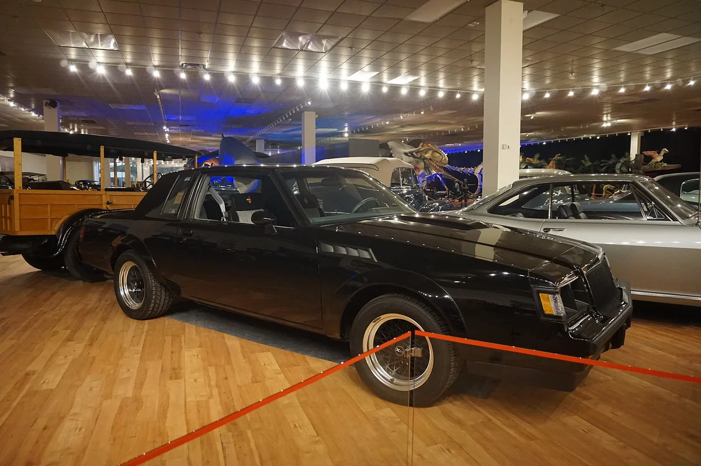
▲ 1987년형 뷰익 GNX. 슬로언 박물관 전시 차량이다 ⓒ Michael Barera, Wikimedia Commons (CC BY-SA 4.0)
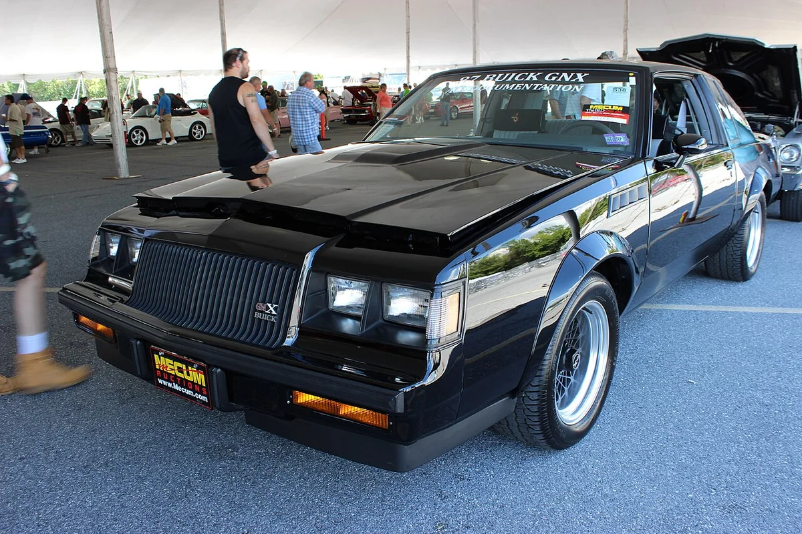
▲ 경매 행사장에 전시된 뷰익 GNX 전면. 검은 차체에 사각 헤드램프 구성이다 ⓒ ilikewaffles11, Wikimedia Commons (CC BY 2.0)
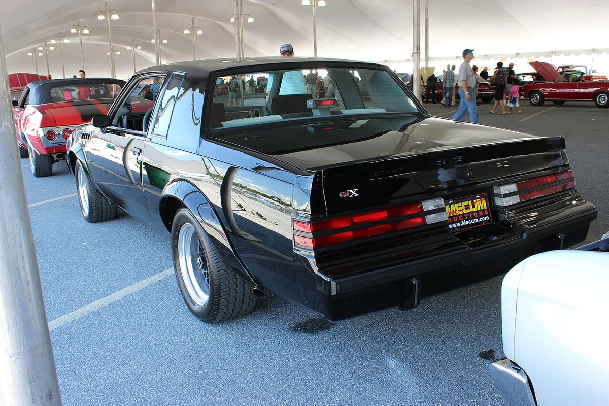
▲ 같은 행사장의 뷰익 GNX 후측면. 부풀린 뒤 휀더가 보인다 ⓒ ilikewaffles11, Wikimedia Commons (CC BY 2.0)
| 차종 | 생산 | 동력 | 해거티 기준 상승률(보도) |
|---|---|---|---|
| 1987 뷰익 리갈 GNX | 547대, 1987년만 | 터보 3.8L V6, 뷰익 공칭 276마력 | +38.2% |
| 2017 닷지 바이퍼 ACR 익스트림 | 2017년 904대(보도, 미확인) | 8.4L V10, 645마력 | +86.3%(2026.10 대 1년 전) |
| 2006 포드 GT 헤리티지 | 343대 | 슈퍼차저 5.4L V8, 550마력 | +91.6%(12개월) |
| 2013 머스탱 보스 302 라구나 세카 | 2012~2013년 합계 약 1,514대 | 5.0L V8, 440마력 | +16%(12개월) |
상승률이 차종마다 다른 이유를 표만으로 단정할 수는 없지만, 생산 대수가 가장 적은 포드 GT(343대)의 상승률이 가장 크고 가장 많은 라구나 세카(약 1,514대)가 가장 작다는 흐름은 읽힌다. 다만 상승률의 기준 기간이 12개월, 1년 전 대비 등으로 제각각이라 단순 순위 비교는 조심해야 한다.
2. 얼마나 올랐나: 4종 가격 흐름
가장 큰 폭은 포드 GT와 바이퍼다. CarBuzz에 따르면 최상급(콘크스 컨디션) 바이퍼 ACR 익스트림은 1년 전 37만 2,000달러에서 69만 3,000달러로 올랐다. 2026년 8월 Bring a Trailer에서는 저주행 차량이 59만 1,000달러에 팔렸고(경매 집계 사이트 Classic.com에서도 8월 28일 BaT 낙찰 59만 1,000달러로 확인되며, 이 차는 1:28 에디션·주행 296마일로 표기돼 있다), 몇 년 전 시세는 23만~30만 달러였다고 한다.
포드 GT 헤리티지는 2024년 초 약 74만 6,000달러에서 지금은 150만 달러로 추정된다고 전했다. 2026년에는 100만 달러를 넘긴 거래가 둘 있었고, 주행 8마일(약 13km)짜리가 4월에 210만 달러에 팔렸다는 설명이다. 포드 오소리티도 2026년 8월 기사에서 해거티를 인용해 2005~2006년 포드 GT가 2분기에 평균 25% 올랐고 헤리티지는 평균 54% 올라 최고가가 100만 달러를 넘었다고 별도로 전했다. 방향은 일치하지만 기간과 지표가 달라 CarBuzz 수치와 직접 맞출 수는 없다.
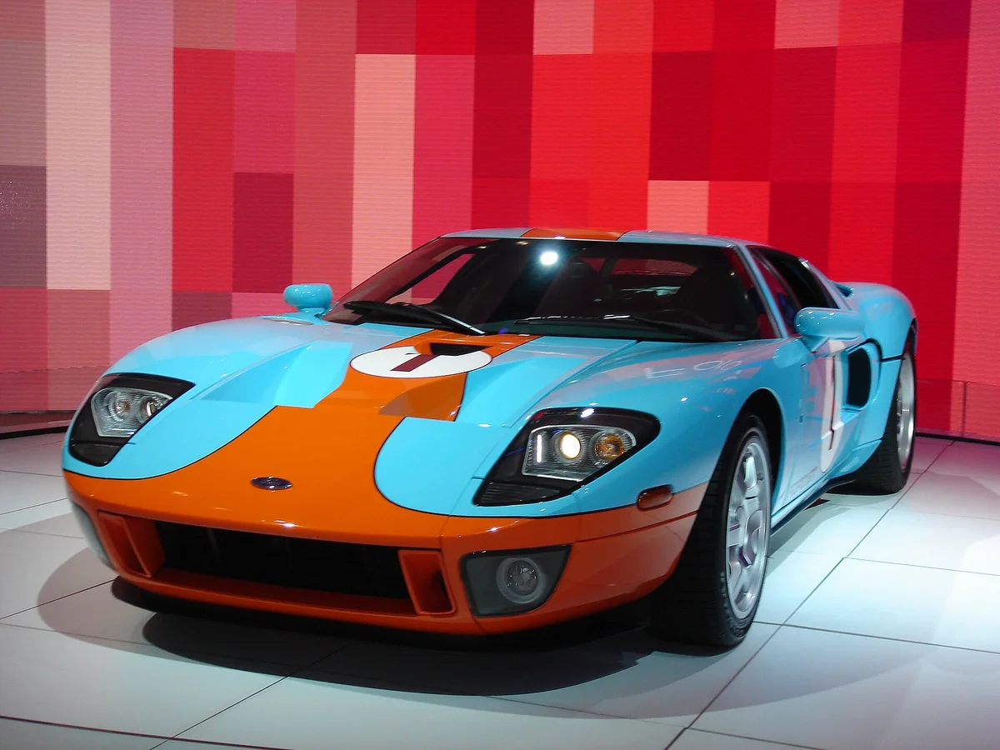
▲ 걸프 컬러의 포드 GT 전면. 헤리티지 에디션과 같은 색 구성이지만 연식은 단정하지 않는다 ⓒ Amit Belani, Wikimedia Commons (CC BY-SA 2.0)
뷰익 GNX는 콘크스 컨디션 값이 몇 년 전 약 27만 6,000달러에서 36만 9,000달러가 됐고, 주행 약 30마일짜리가 Bring a Trailer에서 42만 7,000달러에 팔렸다고 한다. 이 낙찰은 슬래시기어·오토에볼루션 등 여러 매체가 같은 금액으로 보도했고, 이 차는 547대 중 450번째 차로 새 차값이 약 2만 9,000달러였다고 전해진다. 정확한 낙찰일은 매체마다 달라 단정하지 않는다.
비교를 위해 해거티 과거 거래 기록에는 주행 2만 7천 마일대 GNX가 15만 6,800달러에 팔린 기록이 있고, 해거티 쪽 설명에 따르면 2017년 메컴 경매에서 #547이 22만 달러에 팔려 당시 최고가였다. 몇 년 사이 얼마나 뛰었는지 짐작할 수 있다.
보스 302 라구나 세카는 12개월 16%, 3년 24.7% 상승이며 3년간 약 2만 달러 올랐다는 보도다. 오른 폭이 4종 중 가장 작지만, 신차 시절 가격대가 가장 낮은 차여서 일반 컬렉터가 접근하기 쉬운 편이다.
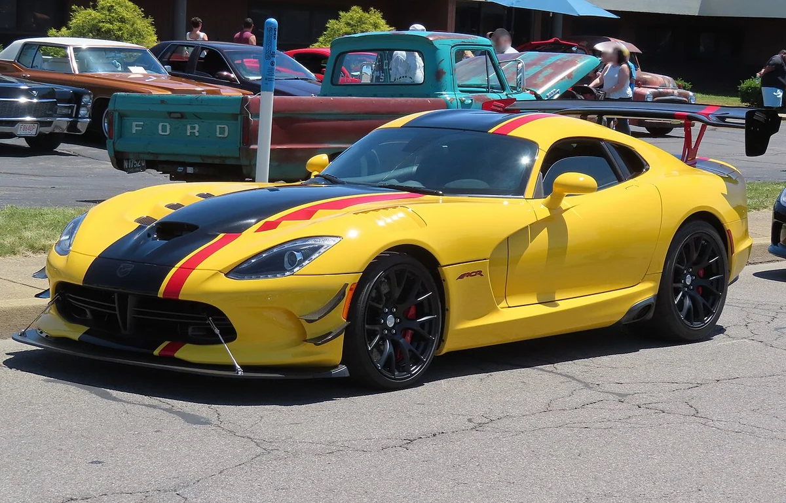
▲ 2016 ACR 익스트림 에어로 패키지 장착 바이퍼(커먼즈 파일명 기준). 대형 전면 스플리터와 리어 윙이 특징이다 ⓒ MercurySable99, Wikimedia Commons (CC BY-SA 4.0)
3. 왜 오르나: 마지막이라는 서사와 동력의 희소성
공통 요인은 "다시는 이런 차를 못 만든다"는 인식이다. 대배기량 V10, 슈퍼차저 V8, 수동 변속기와 아날로그 감각을 갖춘 차는 신차 시장에서 빠르게 사라지는 중이다. 바이퍼는 2017년 단종 이후 후속 이야기가 오래 끊겼고, 후속 격으로 거론되는 차는 다지 코퍼헤드 기사에서 따로 다뤘다.
또 하나는 개체 수다. 547대인 GNX나 343대인 헤리티지는 시장에 나오는 매물이 연간 몇 대 안 돼, 한 대가 높은 가격에 팔리면 평가 기준값이 바로 움직일 수 있다. 해거티 평가값은 실제 거래를 반영하는 방식이어서 거래가 적은 차종일수록 변동 폭이 클 수 있다는 점은 감안해야 한다.
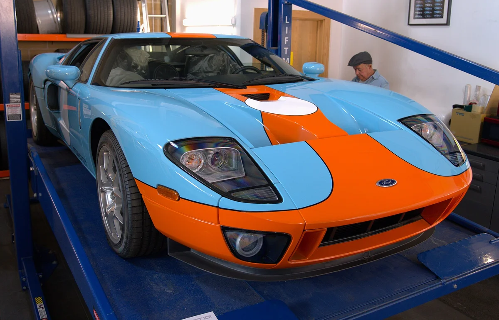
▲ 2006년형 포드 GT 헤리티지 에디션(커먼즈 파일명 GT101). 걸프 컬러 구성이다 ⓒ MrWalkr, Wikimedia Commons (CC BY-SA 4.0)
같은 흐름의 해외 경매 거래는 클래식카 경매 무예약 낙찰 기사와 페라리 458 스페치알레 컬렉터 가치 기사에서도 볼 수 있다.
4. 보도에서 눈에 띄는 불일치 4가지
CarBuzz 기사 안에서 숫자가 서로 맞지 않는 부분이 있어 그대로 옮기지 않았다.
- 포드 GT 상승률: 본문에는 111.3%(3년 미만)라고 나오지만 인용된 가격 74만 6,000달러에서 150만 달러는 약 101% 상승이다. 이 글은 12개월 91.6%만 "보도 기준"으로 썼다.
- GNX 상승률: 제목의 +38.2%와 달리 본문에 나온 콘크스 가격 27만 6,000달러에서 36만 9,000달러를 계산하면 약 34%다. 기간이 다른 지표일 수 있어 기간 없이 "보도 기준 +38.2%"로만 썼다.
- 기간 표현: 헤리티지가 "6개월 만에 두 배 가까이"라는 표현과 "12개월 91.6%"가 한 기사에서 함께 나온다. 기간이 맞지 않아 후자만 인용했다.
- 연식 표기: 보스 302 라구나 세카는 제목에 2013년형, 사진 설명에 2012년으로 적혀 있어 연식은 "2012~2013"으로 처리했다.
해거티 가치 평가는 상태별(콘크스·우수·양호 등)로 값이 크게 다르다. 보도의 최고가는 모두 최상급 기준이므로 평범한 상태 차량에 그대로 적용할 수 없다. 원 기사는 아래에서 볼 수 있다. CarBuzz 원문 바로가기
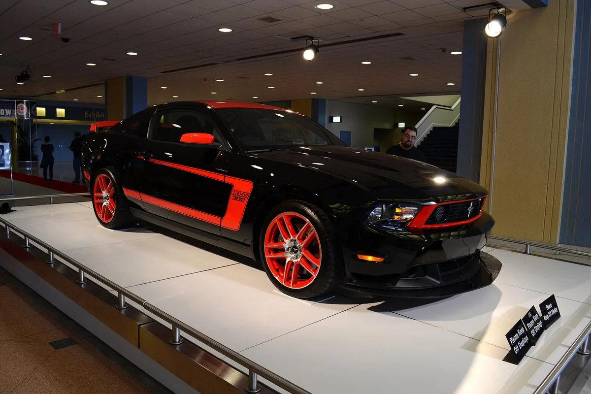
▲ 2012년형 포드 머스탱 보스 302 라구나 세카. 전시장 촬영본이다 ⓒ Brett Levin, Wikimedia Commons (CC BY 2.0)
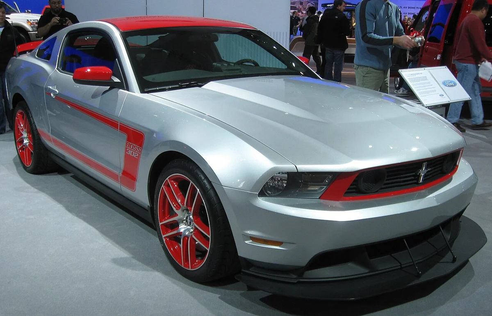
▲ 오토쇼 전시장의 보스 302 라구나 세카. 은색 차체와 붉은 휠 구성이다(커먼즈 파일명 2012년형·2011 표기) ⓒ IFCAR, Wikimedia Commons (퍼블릭 도메인)
5. 한국에서 사려면: 유통과 세금
이번 조사에서 4종의 한국 정식 판매 이력은 확인하지 못했다. 따라서 한국에서 구하려면 병행수입이나 개인 수입이 현실적이다. 4종이 국내에서 어디서 얼마에 거래되는지도 공개 자료를 찾지 못했다.
| 항목 | 확인할 점 |
|---|---|
| 관세·세금 | 관세(미국산은 한미 FTA 원산지 요건 확인), 개별소비세, 교육세, 부가세, 취득세 등이 붙는다. 고가 차량일수록 부담이 크다 |
| 인증 | 미국 사양 차량은 한국 배출가스·안전기준 인증이나 면제 요건을 따로 확인해야 한다 |
| 운송·보험 | 해상운송, 통관 대행, 고가 차량 보험 가입 가능 여부 |
| 환율 | 달러 가격이라 환율 변동이 취득 원가에 직접 영향을 준다 |
세율을 단정하지 않은 이유는 차종·배기량·원산지·연식에 따라 달라지고, 중고차 수입은 신차와 과세 방식이 다를 수 있기 때문이다. 업계 보도에 따르면 한미 FTA로 미국산 승용차 관세는 단계적으로 철폐돼 현재 0%지만, 이는 미국에서 만든 차량에만 적용되고 중고차 수입의 과세 방식은 따로 확인해야 한다. 이번 조사에서 관세청 공식 세율표로 이를 직접 확인하지는 못했다. 공식 기준은 관세청에서 직접 확인하길 권한다. 관세청 바로가기 슈퍼카가 실제로 얼마나 값이 내려가고 유지비가 드는지는 슈퍼카 가격 기사를 함께 보면 감이 온다.
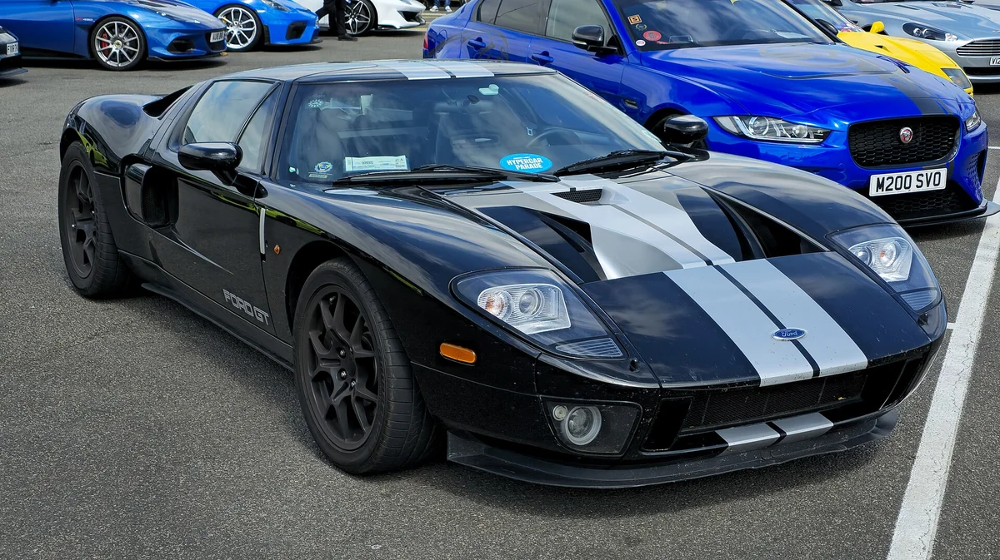
▲ 1세대 포드 GT(2005~2006년형). 걸프 컬러가 아닌 검정 차체다 ⓒ MrWalkr, Wikimedia Commons (CC BY-SA 4.0)
6. 오른 가격에 따르는 위험은 무엇인가
확인 체크리스트
- 오른 가격은 이미 반영된 결과이며, 앞으로도 오른다는 보장은 아니다. 해거티 가격 지수가 한 분기에 후퇴한 차종군이 있었다는 보도(바이퍼 1992~2010년형)도 있다
- 콘크스 상태가 아니면 평가값이 크게 낮아진다. 주행거리·도색·정비 이력·소유 이력 서류가 가치를 좌우한다
- 수입한 이후에도 정비소, 부품, 보험 확보가 어렵다. 포드 GT·바이퍼 부품은 국내에서 구하기 힘들 수 있다
- 세금과 인증 비용은 구매가 외에 따로 든다. 되팔 때 국내 시장 규모가 작아 유동성이 낮다
보관도 문제다. 소수 생산 클래식은 운행하지 않고 두면 연료계통·고무 부품이 상하고, 자주 타면 주행거리가 가치를 깎는다. 이 글은 투자 권유가 아니며, 값이 오른 사실을 정리한 것이다.
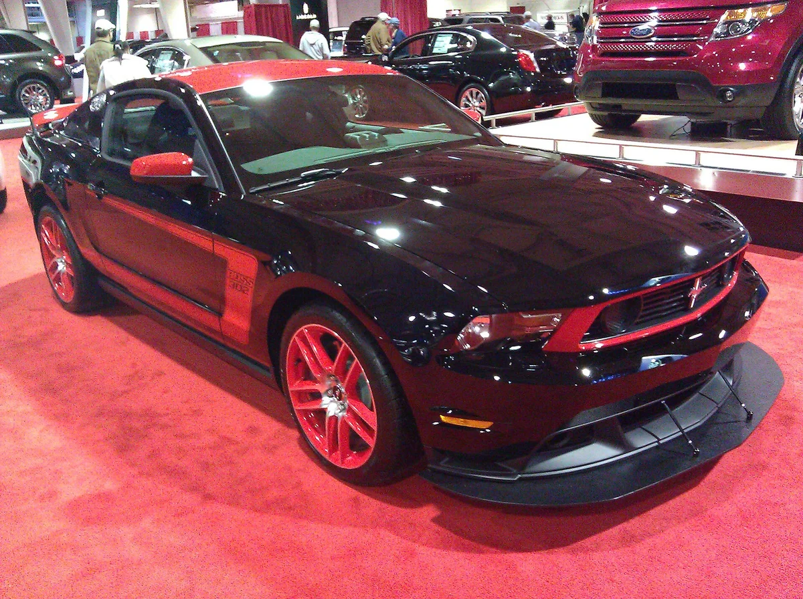
▲ 보스 302 라구나 세카(커먼즈 파일명 2011년 표기). 전면 스플리터가 보인다 ⓒ Wileewilee, Wikimedia Commons (CC BY-SA 3.0)
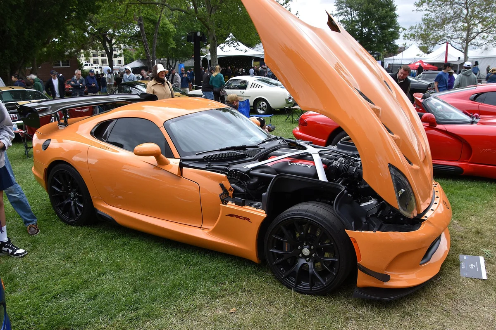
▲ 행사에 전시된 5세대 닷지 바이퍼(커먼즈 표기 2017 ACR 쿠페) ⓒ Charles from Port Chester, Wikimedia Commons (CC0)
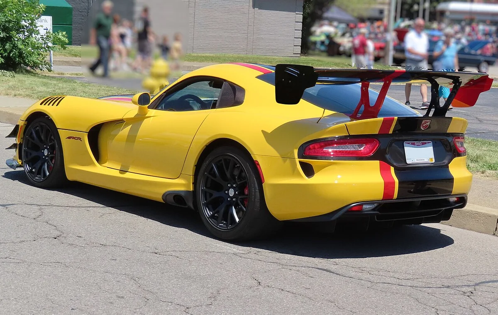
▲ 같은 차량의 후측면. 고정식 카본 리어 윙이 보인다(커먼즈 파일명 2016 ACR 익스트림 에어로 기준) ⓒ MercurySable99, Wikimedia Commons (CC BY-SA 4.0)
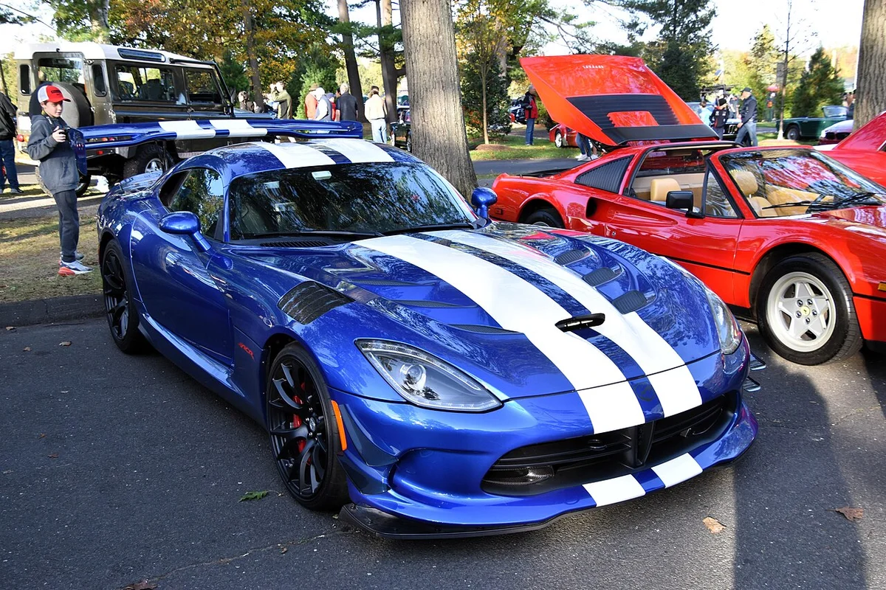
▲ 야외 행사에 나온 바이퍼 ACR 익스트림(커먼즈 파일명 2016 표기) ⓒ Charles from Port Chester, New York, Wikimedia Commons (CC0)
7. 보도만으로 확인하지 못한 것은 무엇인가
- 해거티 가치 평가 도구의 현재값: 해거티 페이지는 접근이 차단돼(403) 열어보지 못했고 CarBuzz 인용 수치를 "보도 기준"으로 표기
- 바이퍼 59만 1,000달러, GNX 42만 7,000달러 낙찰: Bring a Trailer 원 페이지는 열어보지 못했으나 Classic.com과 여러 매체 보도로 금액은 교차 확인
- 한국 정식·병행 유통 실적과 실제 수입 세금 계산: 공식 자료를 찾지 못함
- 바이퍼 2017년 904대 생산량: 제조사 자료 미확인(2차 확인에서도 닷지·스텔란티스 자료를 찾지 못했고, 위키백과는 5세대 전체 2,427대만 제시. 라구나 세카는 2012년 767대+2013년 747대 합계로 맞춰 봤으나 자료별 편차 있음)
카프리즘 시선
보도 수치를 나란히 놓으면 생산 대수가 가장 적은 포드 GT 헤리티지가 가장 많이 올랐고 가장 많은 라구나 세카가 가장 적게 올랐다. 다만 GNX(547대)보다 바이퍼(904대)가 더 올라 생산 대수만으로 설명되지는 않는다. 포드 GT 헤리티지 343대는 +91.6%, 바이퍼 904대는 +86.3%, GNX 547대는 +38.2%, 라구나 세카 약 1,514대는 +16%다. 바이퍼 904대는 다른 자료로 확인되지 않았고 기간 기준도 서로 달라 규칙처럼 읽기는 이르다. 거래가 적은 차종은 한 건의 고가 낙찰이 평가값을 크게 움직일 수 있다는 점도 함께 봐야 한다.
GNX 신차값 약 2만 9,000달러와 BaT 낙찰 42만 7,000달러를 비교하면 약 14.7배다(카프리즘 계산). 그러나 이것은 주행 약 30마일의 최상급 한 대 기준이고, 같은 보도 안에서 포드 GT 상승률이 111.3%와 약 101%로 맞지 않는 등 불일치도 있었다. 이 기사의 수치는 이미 오른 결과를 보여 줄 뿐 앞으로의 가격이나 수익을 말해 주지는 않는다.
8. 요약
CarBuzz는 2026년 10월 20일 해거티 자료를 인용해 포드 GT 헤리티지 +91.6%, 바이퍼 ACR 익스트림 +86.3%, 뷰익 GNX +38.2%, 보스 302 라구나 세카 +16%라고 전했다(보도 기준). 최상급 기준의 경매 사례는 바이퍼 59만 1,000달러, 포드 GT 210만 달러까지 나왔지만 보도 안에 불일치도 있다.
한국에서는 정식 판매 이력을 확인하지 못해 병행·개인 수입이 전제이고, 세금·인증·부품 확보 비용이 크다. 오른 가격은 투자 수익이 아니라 이미 반영된 결과일 수 있어 상태와 서류, 유동성을 먼저 따져야 한다.